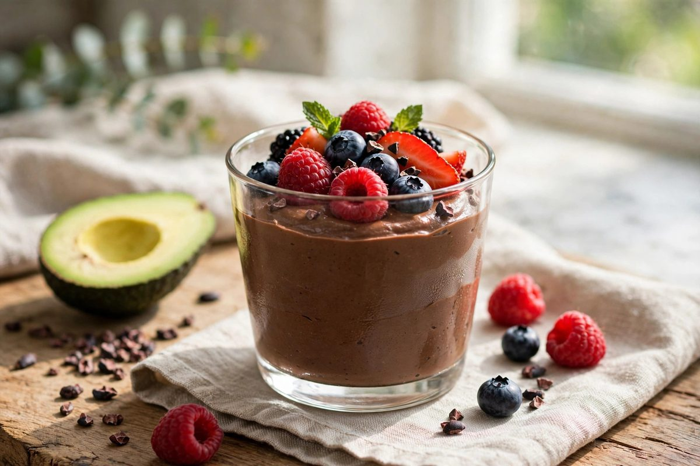

Home › Guides
Low-Carb Desserts: Sweet Treats Without the Sugar

Giving up sugar does not mean giving up dessert. It means learning a new way to make sweet things, using berries, cream, dark chocolate, and sugar-free sweeteners. Low-carb desserts are not a pale imitation of the real thing. A good chocolate mousse or a berry cheesecake is delicious in its own right, and it will not leave you with a sugar crash afterwards.
Chocolate mousse
Chocolate mousse is naturally low in carbs if you make it with dark chocolate, eggs, and cream, and sweeten it lightly. Melt dark chocolate with a little butter, whisk in egg yolks, then fold in softly whipped cream and stiff egg whites.
Use chocolate with at least 70 percent cocoa, and a sugar-free sweetener such as erythritol if you want it sweeter. Chill for two hours. The mousse is rich, so serve small portions in glasses with a few raspberries on top.
Berry cream and cheesecake
Berries with whipped cream is the simplest low-carb dessert. Whip double cream with a little vanilla, and serve it over raspberries or strawberries. It takes five minutes and has about 5 grams of net carbs per serving.
A baked cheesecake with an almond flour base is a more substantial dessert. The filling is cream cheese, eggs, cream, and sweetener, baked gently until just set. It keeps for days in the fridge and slices cleanly, which makes it ideal for guests.
Baked treats
Almond flour is the best flour for low-carb baking. It is low in carbs, high in protein, and gives a moist crumb. Use it for muffins, brownies, and cookies, and add baking powder for lift.
Coconut flour is also low in carbs, but it absorbs a lot of liquid, so use less of it and add extra eggs. Experiment with small batches first, because low-carb baking behaves differently from wheat baking.
Sweeteners: what to use
Erythritol and stevia are the most popular sugar-free sweeteners. Erythritol measures like sugar and has almost no calories, but it can have a cooling aftertaste. Stevia is very sweet, so use a little, and buy a blend made for baking if you can.
Avoid sweeteners that raise blood sugar, such as maltitol and honey, which is still sugar. And remember that a dessert is a treat, not a daily habit. Even a low-carb dessert has calories, so keep portions small.
Desserts for guests
Low-carb desserts are ideal for guests, because they look and taste like ordinary desserts. A baked cheesecake with an almond flour base can be made the day before, and it slices cleanly. Chocolate mousse, served in small glasses with raspberries, looks elegant and takes ten minutes to make.
Serve small portions, because low-carb desserts are rich. Offer berries with cream as a lighter option, and keep coffee and tea on hand. Nobody needs to know the dessert is low-carb, and nobody will guess. A good dessert is a good dessert, whatever diet it fits.
For a dinner party, serve the desserts in small glasses rather than large slices, so guests can try more than one. A chocolate mousse, a berry cream, and a small cheesecake can all be served side by side, and each one takes only a few minutes to prepare. Keep the portions modest, because these desserts are rich, and offer coffee and tea alongside them. A dessert that looks beautiful and tastes good needs no apology for being low-carb.
Frequently Asked Questions
What sweetener is best for low-carb desserts?
Erythritol and stevia are the most popular. Erythritol measures like sugar; stevia is much sweeter, so use less.
Can I eat chocolate on a low-carb diet?
Yes, dark chocolate with 70 percent cocoa or more, in small amounts. It has about 5 g of net carbs per 20 g serving.
Are low-carb desserts really low in carbs?
Homemade ones can be, if you use almond flour, berries and sugar-free sweeteners. Check shop-bought ones carefully.